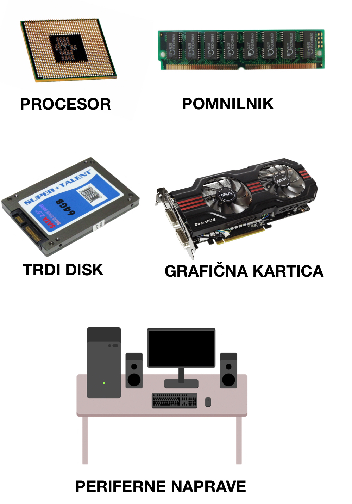

Računalnik je programljiva naprava, ki shranjuje, pridobiva in obdeluje podatke. Izraz "računalnik" je bil prvotno dan ljudem, ki so izvajali numerične izračune z mehanskimi kalkulatorji, kot sta abakus in diapozitiv.
Izraz so pozneje dali mehanskim napravam, ko so začele nadomeščati človeške računalnike. Današnji računalniki so elektronske naprave, ki sprejemajo podatke (vnos), te podatke obdelujejo, proizvajajo izpise in shranjujejo rezultate.
Sestavljen je iz strojne in programske opreme, ki delujeta skupaj, da omogočata delovanje računalniškega sistema.
STROJNA OPREMA RAČUNALNIKA:
Strojna oprema računalnika vključuje fizične komponente, kot so:
- Procesor (CPU): To je osrednja enota računalnika, ki izvaja matematične in logične operacije ter nadzoruje delovanje drugih komponent.
- Pomnilnik (RAM): Gre za trenutno delovni pomnilnik računalnika, ki shranjuje podatke, s katerimi trenutno delujejo programi. RAM omogoča hiten dostop do podatkov, kar prispeva k učinkovitemu delovanju računalnika.
- Trdi disk (HDD ali SSD): Ta komponenta je namenjena dolgotrajnemu shranjevanju podatkov, vključno z operacijskim sistemom, programi in datotekami. HDD uporablja magnetne diske, medtem ko SSD uporablja pomnilniške čipe brez gibljivih delov, kar omogoča hitrejše branje in pisanje podatkov.
- Grafična kartica (GPU): To je specializirana komponenta, ki je odgovorna za obdelavo in prikaz grafičnih podatkov, vključno z igrami, videoposnetki in grafiko visoke ločljivosti.
Napajalnik: To je naprava, ki zagotavlja električno energijo za delovanje računalnika in njegove komponente.
- Periferna oprema: Sem spadajo tipkovnica, miška, zvočniki, tiskalnik, monitor in druge naprave, ki omogočajo uporabniku vnos podatkov, izhod informacij in interakcijo z računalnikom.

PROGRAMSKA OPREMA RAČUNALNIKA:
Programska oprema je niz navodil, podatkov ali programov, ki se uporabljajo za upravljanje računalnikov in izvajanje določenih nalog. Programsko opremo razdelimo v dve glavni kategoriji:
- Sistemska programska oprema: Zasnovana je za zagon strojne opreme računalnika in zagotavlja platformo za izvajanje aplikacij.
- Aplikacijska programska oprema: Namenjena je izvajanju specifičnih nalog in opravil za uporabnike. Gre za programe, ki so razviti za zadovoljevanje potreb in zahtev posameznih ali skupin uporabnikov.